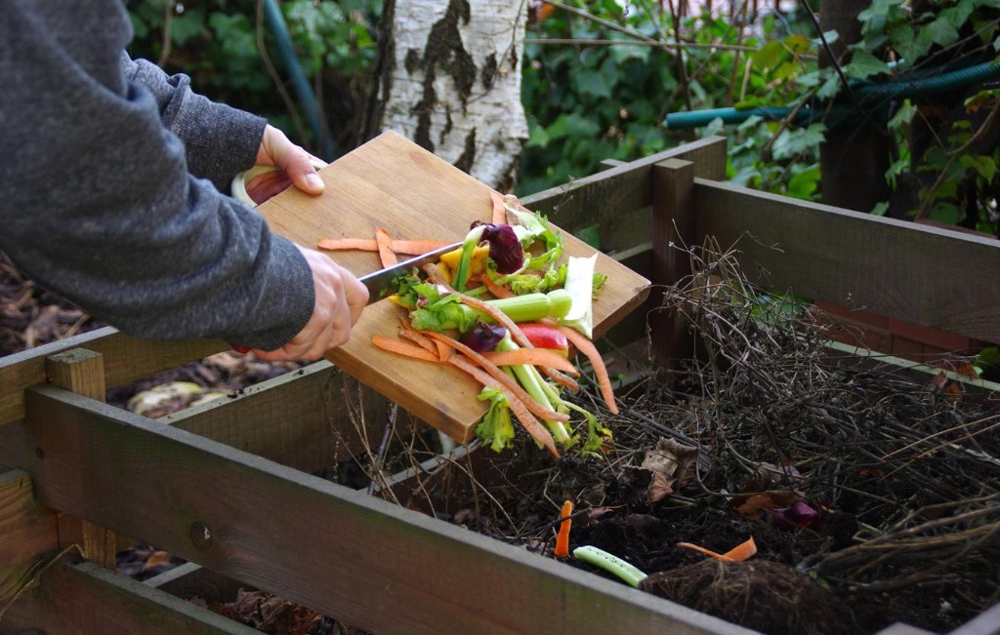
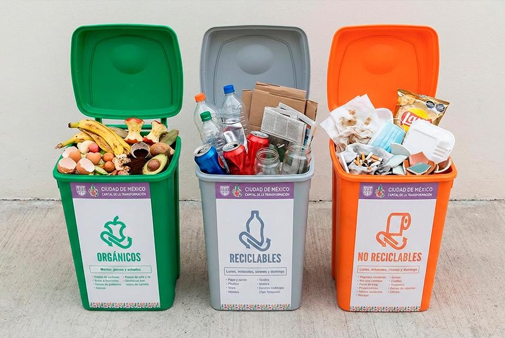
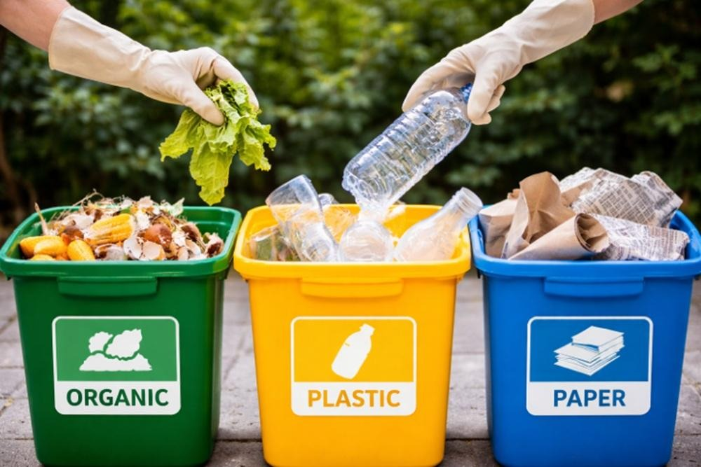
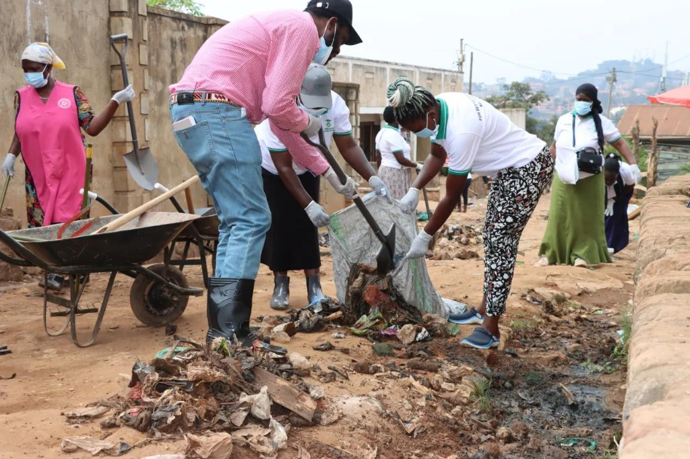
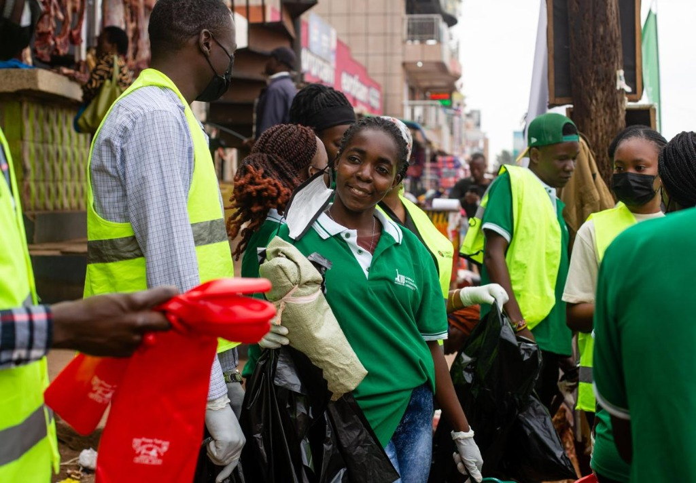
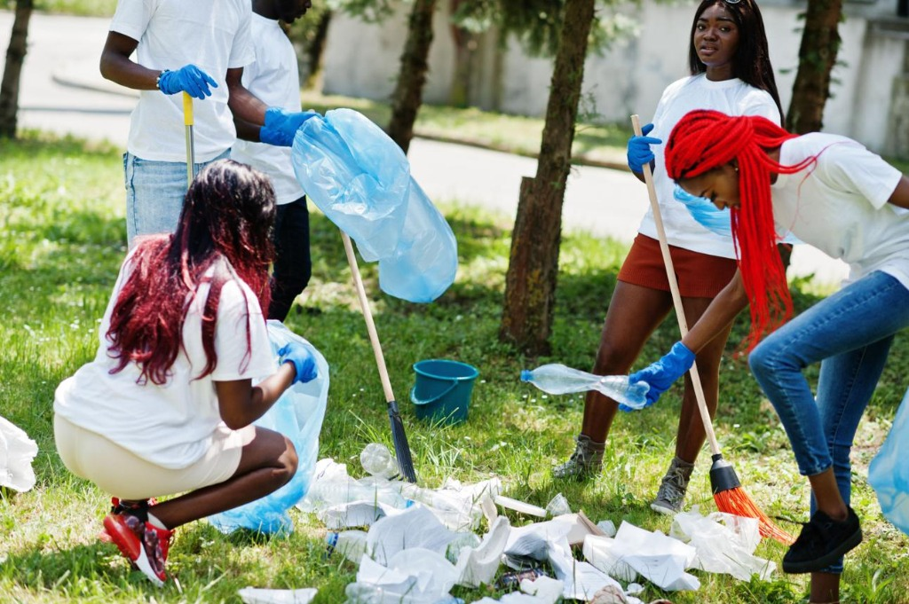
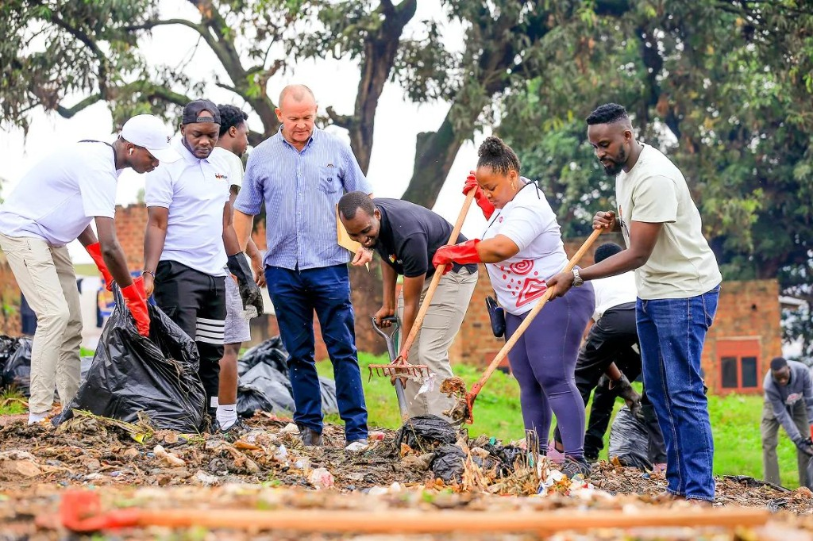

Food & Garden Waste
Matooke and cassava peelings, vegetable scraps, leftover food, eggshells, tea leaves, and compound leaves.
Compost at home or tie in a separate wet sackHOME / SORTING & VOLUNTEERS
Separate organic scraps from dry recyclables at home and join upcoming LC1 and KCCA community clean-up drives in Kyebando.
01 / Waste Sorting Guide
Over 70% of household rubbish in Kampala consists of wet organic peelings and food scraps. When mixed with plastic bottles, polythene bags, and broken glass, wet waste contaminates recyclables, leaks foul leachate onto roads, and clogs Nsooba drainage trenches.


Matooke and cassava peelings, vegetable scraps, leftover food, eggshells, tea leaves, and compound leaves.
Compost at home or tie in a separate wet sack
Rinsed water bottles, jerrycans, soda cans, scrap metal, clean cardboard boxes, and glass jars.
Keep dry for local scrap buyers & recyclers

Composting: Dig a small covered pit or use a ventilated drum in your compound for matooke peelings and leaves—producing rich garden manure within 6–8 weeks.
Reusing: Wash and reuse durable plastic jerrycans, glass jars, and woven shopping bags instead of buying single-use polythene kaveera.
Recycling: Store clean PET plastic bottles and scrap metal in a dry sack to sell or hand over to Kyebando Youth Eco-Collectors and local scrap dealers.
02 / Recycling in Motion
The uploaded video runs for approximately 2 minutes and includes an audio track. It illustrates a recycling process and is not evidence of an operating service or facility in Kyebando.
This separate illustrated guide summarises simple household sorting and collection tips.
03 / Clean-Up Calendar
Community sanitation drives announced jointly by Kyebando LC1 leaders and KCCA Kawempe Division:
| Date & Time | Clean-Up Drive & Focus | Meeting Point & Zone | Organizers |
|---|---|---|---|
| Sat, 21 Nov 2026 07:30 – 11:00 |
Nsooba Channel Bridge Desilting Drive Clearing plastic blockages and silt from main stormwater culverts |
Nsooba Road Bridge (CP-02), Nsooba Zone | Nsooba LC1 & KCCA Kawempe |
| Sat, 05 Dec 2026 07:00 – 10:30 |
Katale Market & Gayaza Rd Sweeping Market perimeter sweeping, drain unblocking, and waste sorting demo |
Katale Market East Stage (CP-01), Katale Zone | Katale LC1 & Market Committee |
| Sat, 19 Dec 2026 07:30 – 11:00 |
Central & Kisalosalo Culvert Clearing Pre-holiday neighborhood trench clearing and bulk waste haulage |
Ring Road Roundabout Bay (CP-03), Central / Kisalosalo | Central & Kisalosalo LC1 Desks |
03 / Volunteer Sign-Up
Register your name and zone so LC1 coordinators can plan gloves, spades, and collection sacks.
Submission information: Online submissions work after the site is deployed and Netlify Forms is enabled. Until live delivery and email notifications are configured, contact the project team at kyebandoclean@gmail.com. Do not assume this form alerts KCCA or LC1 automatically.
04 / Community Story
When prolonged rubbish backlogs threatened public health and blocked local pathways in Kyebando, neighborhood youth organized their own community clean-up drive—pooling resources to hire a collection truck and clear mounting heaps alongside residents. Their grassroots initiative was documented by Nile Post and helped inspire stronger coordination between residents, youth collectors, and LC1 leaders.
Read the full Nile Post story ↗



